Expert Doctors
For a Healthier Tomorrow
Connect with India's leading doctors across multiple specialties and get the right treatment with expert guidance, personalised care and complete medical travel support.
 Highly Experienced Doctors
Highly Experienced Doctors
 Leading Hospitals in India
Leading Hospitals in India
 Personalised Patient Support
Personalised Patient Support
Find Doctors by Specialty
 Cardiology
Cardiology
 Oncology
Oncology
 Orthopedics
Orthopedics
 Urology
Urology
 Neurosurgery
Neurosurgery
 Gastroenterology
Gastroenterology
 IVF & Fertility
IVF & Fertility
 Dental
Dental
 Cosmetic Surgery
Cosmetic Surgery
 Ophthalmology
Ophthalmology
 More Specialties
More Specialties
Top Doctors in India
Consult with highly qualified and experienced doctors from India's best hospitals.
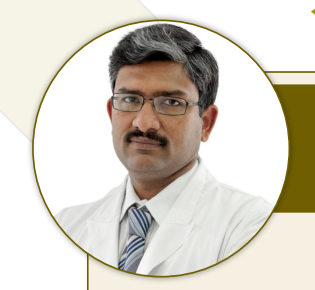
ArtemisDr. Aditya Gupta
Chief - Neurosurgery & Cyberknife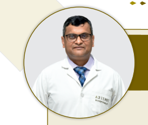
ArtemisDr. Amit Kumar Chaurasia
Chief - Interventional Cardiology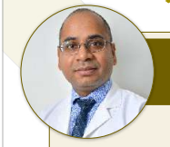
ArtemisDr. Aseem R. Srivastava
Head - Pediatric Cardiac Surgery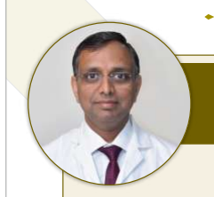
ArtemisDr. Ashu Kumar Jain
Director - Pain Medicine & SpineDr. Deepak Jha
Chief - Breast Surgery & Surgical Oncology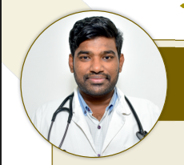
ArtemisDr. Arun Chowdary Kotaru
Senior Consultant - PulmonologyDr. Ashish Baweja
Senior Consultant - Gastroenterology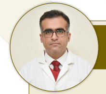
ArtemisDr. Gaurav Dixit
Head - Clinical Hematology & BMT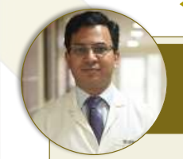
ArtemisDr. Hitesh Garg
Head - Spine SurgeryDr. Manju Aggarwal
Director & Head - Nephrology & TransplantDr. Parul Prakash
Senior Consultant - Ophthalmology & GlaucomaDr. Rajiv Yadav
Director - Uro-Oncology & Robotic Surgery Artemis
Artemis
Dr. Sanjay Sarup
Head - Pediatric Orthopedics & SpineDr. S. K. Rajan
Head - Neuro-Spine Surgery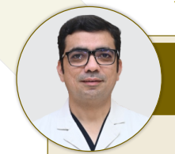
ArtemisDr. Tariq Matin
Head - Interventional NeuroradiologyDr. Varun Mittal
Senior Consultant - Plastic & Cosmetic Surgery Artemis
Artemis
Dr. Hemant Sharma
Director - Orthopedics & Joint Reconstruction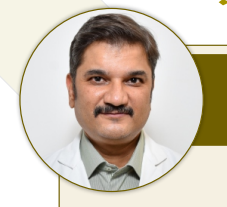
ArtemisDr. Kuldeep Arora
Senior Director - Interventional Cardiology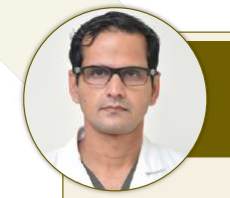
ArtemisDr. Parveen Yadav
Chief - Thoracic Surgical Oncology Artemis
Artemis
Dr. Sandeep Chauhan
Senior Consultant - Orthopedics & Trauma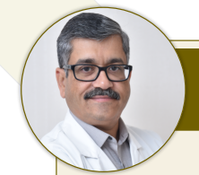
ArtemisDr. Sumit Singh
Director - Neurology & Movement Disorders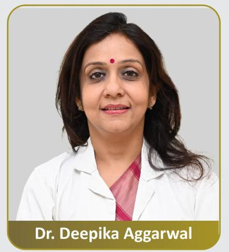
ArtemisDr. Deepika Aggarwal
Director - Obstetrics, Gynaecology & IVF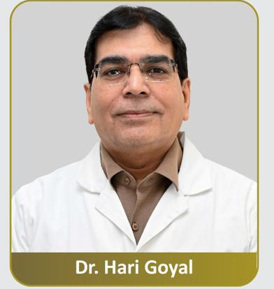
ArtemisDr. Hari Goyal
Senior Director - Medical OncologyDr. Mayank Madan
Director & Chief - Bariatric & GI Surgery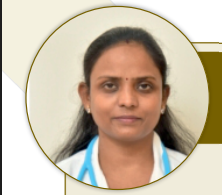
ArtemisDr. Anju Singh
Senior Consultant - Pulmonology & Critical Care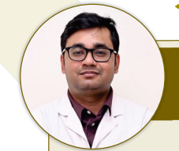
ArtemisDr. Anuvrat Sinha
Senior Consultant - Internal Medicine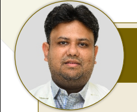
ArtemisDr. Biswarup Purkayastha
Senior Consultant - Radiation OncologyDr. Giriraj Bora
Chief - Liver Transplant & HPB Surgery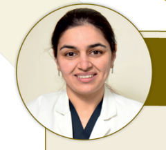
ArtemisDr. Dilpreet Bajwa
Director & Chief Dental Surgeon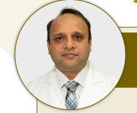
ArtemisDr. Dinesh Bansal
Senior Consultant - Spine Surgery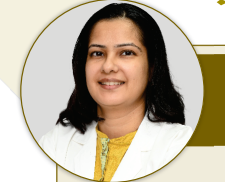
ArtemisDr. Kanika Singh
Senior Consultant - Pediatric Oncology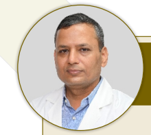
ArtemisDr. Rahul Naithani
Director - Bone Marrow Transplant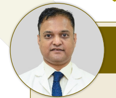
ArtemisDr. Rakesh Durkhure
Director - Minimal Access & GI Surgery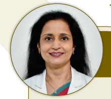
ArtemisDr. Renu Raina Sehgal
Director - Obstetrics, Gynaecology & Infertility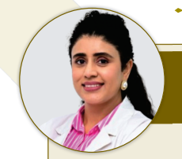
ArtemisDr. Shifa Yadav
Senior Consultant - Ophthalmology & Cornea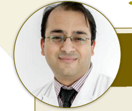
ArtemisDr. Sidharth Kumar Sethi
Director - Pediatric Nephrology & Transplant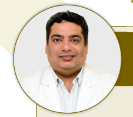
ArtemisDr. Vishal Arora
Senior Consultant - Ophthalmology & Cataract Artemis
Artemis
Dr. I. P. S. Oberoi
Chairman - Orthopedics & Joint Replacement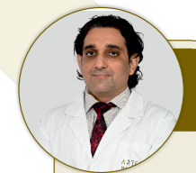
ArtemisDr. Kapil Jamwal
Head - Gastroenterology & Hepatology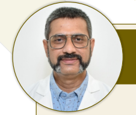
ArtemisDr. Paritosh S. Gupta
Head - General & Bariatric Surgery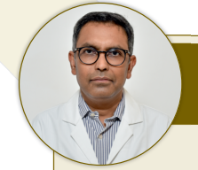
ArtemisDr. Prabhat Maheshwari
Director - Neonatal & Pediatric Intensive CareDr. Sakshi Karkra
Head - Pediatric Gastroenterology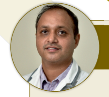
ArtemisDr. Shashidhar T. B.
Head - ENT, Head & Neck Surgery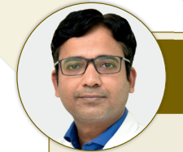
ArtemisDr. Shyam Sunder Mahansaria
Director - Neuro-Anesthesia & Neuro-CareDr. Tapan Chauhan
Senior Consultant - Surgical OncologyDr. Manzoor Ahmed Mir
Senior Consultant - Surgical OncologyDr. Nitin Goel
Senior Consultant - Surgical Oncology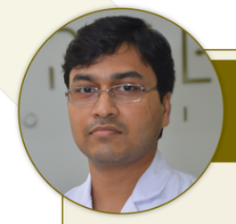
ArtemisDr. Pawan Goyal
Senior Consultant - Urology & Andrology Artemis
Artemis
Dr. Piush Girdhar
Senior Consultant - Rheumatology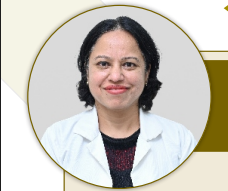
ArtemisDr. Poonam Gautam
Senior Consultant - Pediatrics & NeonatologyDr. Pradeep Kumar Singh
Senior Consultant - CardiologyDr. Priyanka Raina
Senior Consultant - Fetal Medicine & GeneticsDr. Rajiv Sharma
Senior Consultant - Urology & Renal Transplant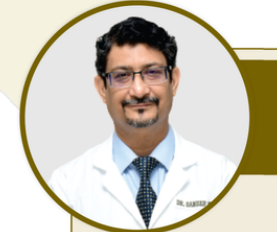
ArtemisDr. Sameer Mehrotra
Senior Director - Cardiology & EPExpert Care You Can Trust

Highly Qualified and Experienced

Associated with Top Hospitals

International Patient Support

Personalised Treatment Plans
What Our Patients Say
"The doctor and entire team were very supportive throughout my treatment journey. I felt well taken care of, and the coordination by Adam Vacations made everything smooth from travel to treatment."

Sarah M.
"Consulting with Dr. Amit Verma was the best decision for my bilateral knee replacement. The surgery was completely painless with robotic assistance and I walked the very next day."
Ahmed Al-Mansoor
"Our fertility journey seemed impossible until we met Dr. Priya Singh at BLK. Her compassionate guidance and world-class IVF lab gave us our twin miracles. Forever grateful!"
Grace & John O.
"Dr. Subhash Gupta's team performed a life-saving liver transplant for my brother. Exceptional international patient care and complete post-operative follow-up support."
Tariq K.

500+
Experienced Doctors

50+
Top Hospitals in India

1000+
International Patients Supported
Need Help Finding the Right Doctor?
Get a free medical opinion and let our experts guide you to the best treatment options in India.